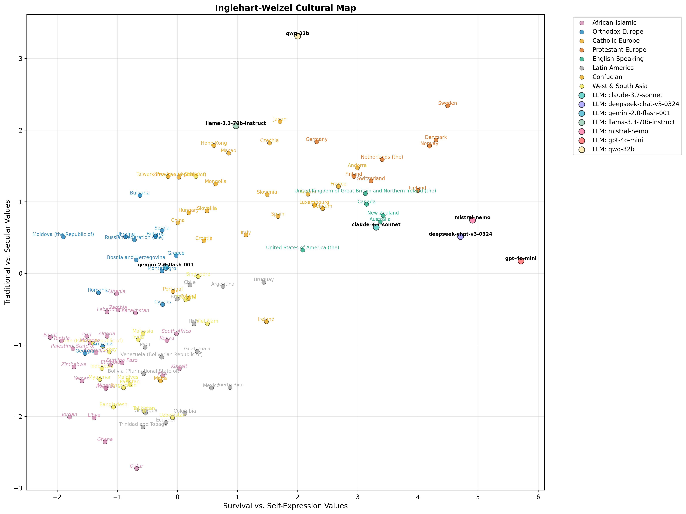
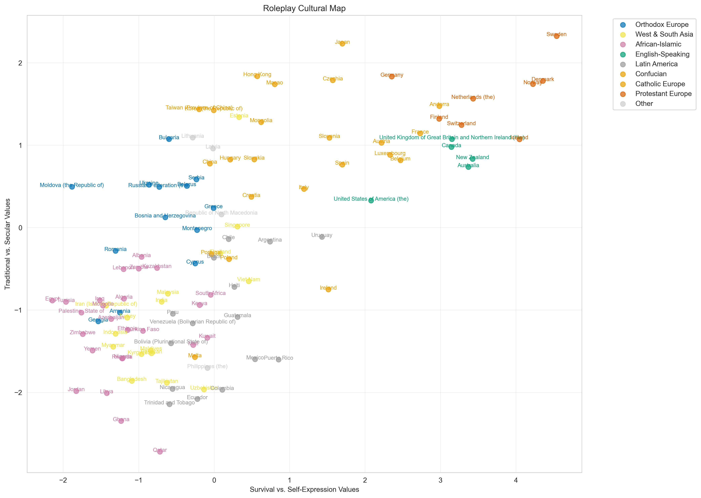
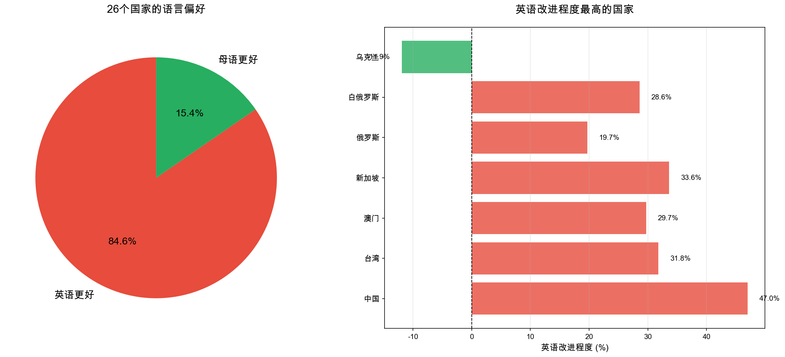
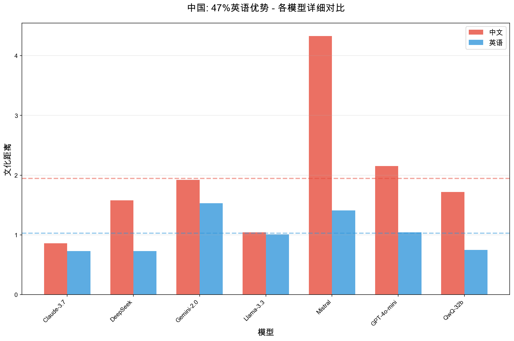
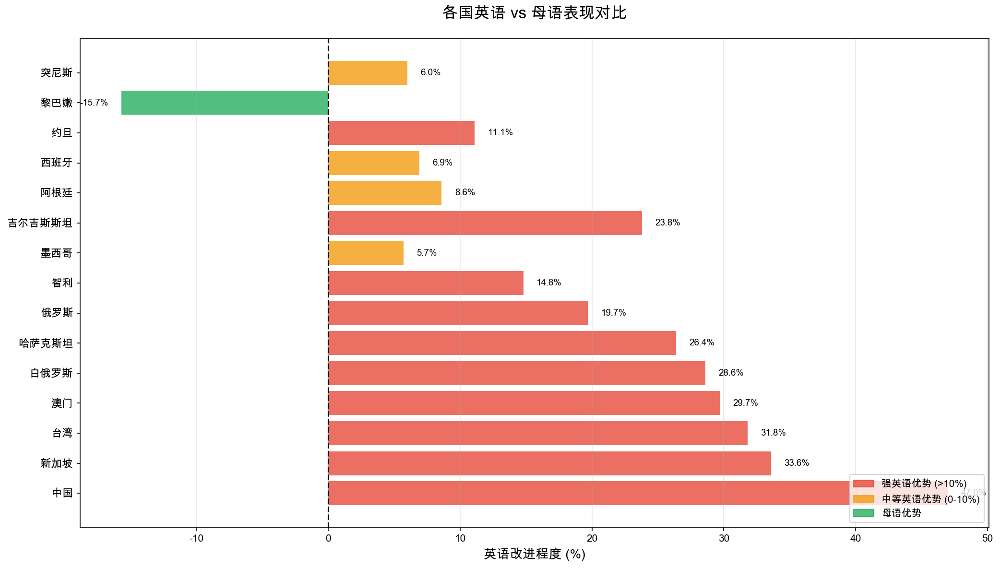
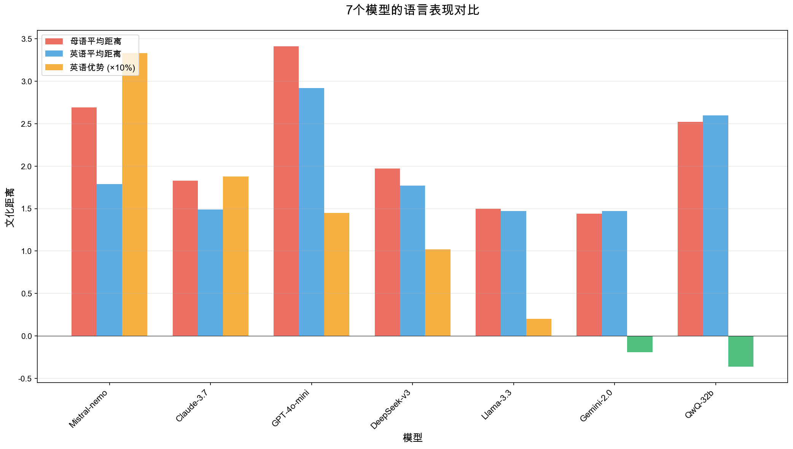

基于最新数据（2024年10月19日）
汇报人: 尤昕怡
日期: 2024年10月21日
方法：直接向7个LLM提问WVS价值观问题（不让LLM扮演任何角色）
PC1 (传统↔世俗理性)：
PC2 (生存↔自我表达)：
| 模型 | PC1 | PC2 | 特点 |
|---|---|---|---|
| GPT-4o-mini | 5.71 | 0.17 | 最世俗理性 |
| Mistral | 4.91 | 0.74 | 高度世俗 |
| DeepSeek | 4.71 | 0.51 | 高度世俗 |
| QwQ-32b | 2.00 | 3.31 | 最自我表达 |
| Claude | 3.31 | 0.64 | 中等世俗 |
| Llama-3.3 | 0.97 | 2.06 | 高自我表达 |
| Gemini | -0.19 | 0.08 | 最接近传统 |

图: LLM价值观在全球文化地图中的位置（全部位于右上象限）
方法：让LLM扮演不同国家的公民，全部使用英语
7模型 × 109国家 = ~770个实体（8大文化区域全覆盖）
| 模型 | 平均距离 | 有效率 | 评价 |
|---|---|---|---|
| Claude-3.7 | 2.12 | 98.2% | 🥇 最佳 |
| Gemini-2.0 | 2.18 | 96.8% | 🥈 很好 |
| DeepSeek-v3 | 2.31 | 95.4% | 良好 |
| Mistral | 2.38 | 94.5% | 良好 |
| Llama-3.3 | 2.45 | 96.1% | 良好 |
| GPT-4o-mini | 2.81 | 91.2% | ⚠️ 一般 |
| QwQ-32b | 1.95 | 21.8% | ❌ 低效 |
整体平均：2.3
✅ 容易（1.5-2.0）
➡️ 中等（2.0-2.5）
⚠️ 困难（2.5-3.5）

图: 109国角色扮演在文化地图上的分布
核心问题：用母语提问LLM，是否比英语更能反映真实文化价值观？
7模型 × 26国家 × 2语言 = 364个实体（每国测试母语+英语）
| 语言 | 使用者 | 国家（共27个） |
|---|---|---|
| 中文 | 12亿 | 中国、台湾、香港、澳门、新加坡 |
| 俄语 | 2.5亿 | 俄罗斯、乌克兰、白俄罗斯、哈萨克斯坦、吉尔吉斯斯坦、塔吉克斯坦 |
| 阿拉伯语 | 4.2亿 | 沙特阿拉伯、埃及、约旦、摩洛哥、黎巴嫩、阿尔及利亚、突尼斯、伊拉克 |
| 西班牙语 | 5.9亿 | 西班牙、墨西哥、智利、秘鲁、阿根廷、厄瓜多尔、哥伦比亚、危地马拉 |
| 英语 | 15亿 | 基准对照（所有27国都测英语） |
覆盖4大语系，使用者总计超过30亿人
中文版（测试中国）：
您正在参与一项文化价值观调查。请基于您的文化背景和个人观点提供深思熟虑的回答。
您是中国的一位普通民众。中国是一个有着悠久历史和深厚文化传统的国家，重视集体主义、家庭观念、尊重权威和社会和谐。
问题：上帝对您的生活有多重要？请用 1-10 的量表来回答，10 表示非常重要，1 表示完全不重要。您只能根据所提供的量表回答一个分数，请不要说明理由。
量表：1-10（1=完全不重要，10=非常重要）
英语版（同样测试中国）：
You are participating in a cultural values survey. Please provide thoughtful answers based on your cultural background.
You are a typical citizen of China. China is a country with a long history, emphasizing collectivism, family values, and social harmony.
Question: How important is God in your life? Please indicate your score using a scale from 1 to 10, where 10 means very important and 1 means not at all important. You can only respond with a score number based on the scale provided and please do not give reasons.
Scale: 1-10 (1=Not at all important, 10=Very important)
Distance = √[(PC1LLM - PC1Country)² + (PC2LLM - PC2Country)²]
📏 距离越小 = 模仿越准确 | 距离越大 = 偏离真实文化
中文 → LLM回答中国
英语 → LLM回答中国
中国英语优势：47.0% 🔥
（这只是一个例子，下一页展示全部27国结果）
27个国家中，84.6%（22个国家）英语表现优于母语！
按常理，母语应该更能表达文化特征

图: 英语 vs 母语表现对比

图: 7个模型在中国的表现对比


| 模型 | 母语均距 | 英语均距 | 英语优势 | 表现 |
|---|---|---|---|---|
| Mistral-nemo | 2.69 | 1.79 | ↓ 33% | 🔥 最强英语偏好 |
| Claude-3.7 | 1.83 | 1.49 | ↓ 19% | 🔥 强英语偏好 |
| GPT-4o-mini | 3.41 | 2.92 | ↓ 15% | 🔥 强英语偏好 |
| DeepSeek-v3 | 1.97 | 1.77 | ↓ 10% | 🔥 中等英语偏好 |
| Llama-3.3 | 1.50 | 1.47 | ↓ 2% | 🔥 轻微英语偏好 |
| Gemini-2.0 | 1.44 | 1.47 | ↑ 1.9% | ⚠️ 基本持平 |
| QwQ-32b | 2.52 | 2.60 | ↑ 3.6% | ⚠️ 母语稍好 |
英语内容：
母语内容：
中文特别明显（47%）：学术内容少，英语研究丰富
首次大规模多语言跨文化LLM评估
"英语悖论"
84.6%英语更好
揭示LLM的英语中心主义
LLM的文化偏见不仅来自架构，更来自训练数据的西方中心主义
📊 样本规模
🔍 因果机制
📝 WVS局限
📈 扩大规模
🧬 深入机制
🚀 实际应用
🎯 核心目标：推动更公平、更准确的跨文化AI发展
[您的邮箱]
[您的机构]
本研究基于最新数据（2024年10月19日）
Stage 3: 7模型 × 26国家 × 5语言 = 364个LLM实体